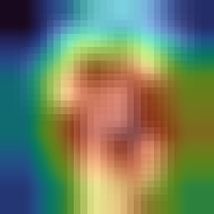

FIG 01 / EVALUATION
Training dynamics
Validation accuracy
Performance tracked during training; the best validation checkpoint is retained before test evaluation.
An open, reproducible study of convolutional neural networks, transfer learning and visual explanations. Because a prediction is only the beginning.

Identical stratified train, validation and held-out test splits. Test metrics computed only after validation-based checkpoint selection.
Performance tracked during training; the best validation checkpoint is retained before test evaluation.
Rows represent ground truth, columns represent predictions. All counts come from the held-out test set.
Explore attribution maps generated from the actual trained checkpoints. Change the sample, switch models and compare the heatmap with the original image.
Clear boundaries between verified evidence and an optional, larger-scale ImageNet transfer experiment.
Stratify images into disjoint train, validation and test sets. Fix random seed and preserve sample indices.
LEAKAGE-SAFE PARTITIONINGTrain the CNN from scratch. Pretrain ResNet-18 on image rotations using training images, then fine-tune for digits.
TWO DISTINCT LEARNING PATHSMeasure classwise performance, calibration and uncertainty. Generate Grad-CAM maps on genuine test examples.
REAL HELD-OUT TEST EVIDENCERe-run the offline benchmark, inspect artifacts, or launch the optional CIFAR-10 + ImageNet-1K study.
VERSIONED SCRIPTS & CHECKPOINTSPyTorch training scripts, model checkpoints, test predictions, metrics JSON, reproducible commands, automated tests and this interactive report are included in the downloadable repository archive.
Read the research README ↗# Reproduce offline study
python scripts/run_experiment.py
# Launch model inference app
streamlit run app.py
# Run verification suite
pytest -q tests
✓ Checkpoints and evidence included